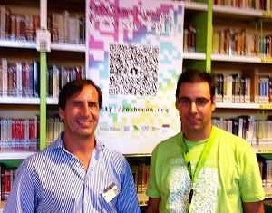
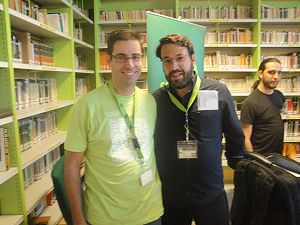
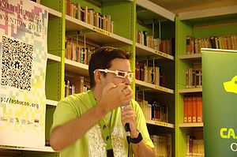
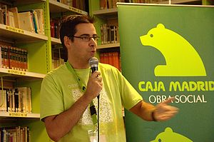
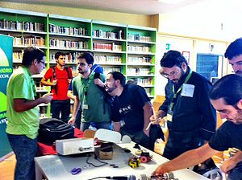

|
 |
Ficha
- Título: "Robots libres e imprimibles"
- Evento: OSHWCon: Convención de Open Source Hardware, Electrónica y Robótica
- Ponente: Juan González
- Duración: 50min
- Organiza: synusia
- Lugar: Centro de formación Padre Piquer. Madrid
- Fecha: 24-Septiembre-2011
Resúmen
Presentación de los nuevos robots imprimibles y libres que se están realizando en el departamento de Ingeniería de sistemas y Autómatica de la Universidad Carlos III de Madrid. La comunidad puede evolucionar estos robots, mejorándolos y adaptándolos a las necesidades particulares. Son especialmente interesantes para docencia y educación.
Transparencias
| 2011-09-24-OSHWcon-Robots-libres-imprimibles.pdf | Transparencias (PDF) |
| 2011-09-24-OSHWcon-Robots-libres-imprimibles.odp | Fuentes de las transparencias para LibreOffice 3 |
| En línea en Slideshare | Transparencias en línea |
| En línea en Scribd | Transparencias en línea |
Vídeo de la Charla
|
|

Vídeos mostrados durante la charla
- Vídeo 1: Jugando con el Miniskybot
- Vídeo 2: Primera telecopia del Miniskybot
- Vídeo 3: Orugator moviéndose sobre piedas
- Vídeo 4: Orugator sobre hierba.
- Vídeo 5: Orugator intentando subir peldaños
- Vídeo 6: Unitrack subiendo una pendiente
Licencia
| |
Fotos
|  Alejandro Alonso y Juan González(click para ampliar) |
 Obijuan junto a David Cantolla, ¡el creador de Pocoyó! :-) (click para ampliar) |


|  Obijuan con las gafas imprimibles (click para ampliar) |
 Durante la charla (click para ampliar) |


|  Enseñando los robots al final de la charla (click para ampliar) |

Artículos
|
Enlaces
- OSHWCon
- RepRap: Impresoras 3D auto-replicantes
- Makerbot: Empresa Makerbot, que comercializa impresoras 3D open-source
- Thingiverse: El youtube de los objetos
- Skybot: Robot móvil educacional (Libre pero NO imprimible)
- Mini-Skybot: Robot móvil libre e imprimible
- OpenScad: Herramienta libre para diseño de piezas
- Freecad: Herramienta libre de CAD
- Objetos 3D: Objetos imprimibles
- Tarjeta Skycube
- Kicad: Herramienta libre para diseño de circuitos
- Piezas creadas en Plastic Valley UC3M!
- Orugator
- Unitrack
- ASROB: Asociación de Robótica UC3M
- Grupo de impresoras 3D de la asociación de robótica UC3M
- Proyecto Clone Wars: Clonando impresoras 3D
- UC3M Challenge - Mission: MARS
- OOML: Object Oriented Mechanics. Mecánica orientada a Objetos
Créditos
- Alberto Valero-Gomez, Andres Prieto-Moreno, Mohamed Abderrahim y Juan Gonzalez-Gomez son los autores del artículo: "A New Open Source 3D-printable Mobile Robotic Platform for Education"
- Olalla Bravo es la creadora de la rueda loca del Miniskybot 1.0 y del robot Orugator
- Daniel Gómez es el creador de la pieza para los sensores IR del Miniskybot y del robot Orugator
- Jon Goitia es el creador de los robots Unitrack y F-track
- La impresora MADRE pertenece a la Asociación de Robótica UC3M
- Santiago Morante es el creador del nombre "Plastic Valley UC3M"
Agradecimientos
- A toda la organización del OSHW. Gracias por organizar un evento como este. ¡Era totalmente necesario!
- A Juan Manuel Amuedo por contactar conmigo para dar esta charla. ¡Muchas gracias!
Noicias
- 17/Dic/2011: Subidas nuevas fotos
- 15/Oct/2011: Publicado el vídeo de la conferencia
- 28/Sep/2011: Publicada la primera versión de esta página (Blog)
- 26/Sep/2011: Comenzada la página